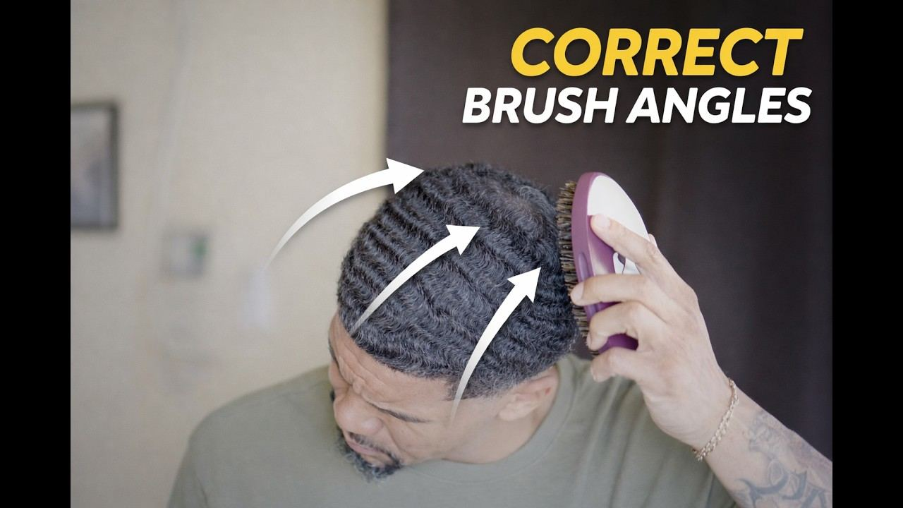

540 Waves: The Diagonal Pattern for Wavers Ready to Level Up
A 540 pattern is what happens when a waver takes the discipline of 360s and tilts it: instead of radiating straight out from the crown, the sides sweep diagonally, so the pattern appears to spin one and a half turns around the head. It is rarer, harder to connect, and unmistakable when done right. This is an extreme-tier guide because 540s punish every weakness in your fundamentals — your angles, your crown control, and your consistency all get audited at once. Master 360s first; then, if you want the pattern almost nobody has, here is the road.
How the 540 pattern works
In a 360, the sides brush down-forward at about 45 degrees. In a 540, that side angle steepens — the sides brush more horizontally toward the front, as if the whole pattern is being wound around the head. The top still comes forward and the back still comes down, but the sides sweep so far forward that the wave direction effectively rotates an extra half-turn.
The crown placement matters even more than in 360s — many 540 wavers work from a crown that sits further back, which helps the diagonal sweep develop. This is a pattern you choose deliberately and cut for: tell your barber, because the cut and the grain work have to agree with the diagonal from day one.
The transition: shifting your angles
You do not jump from 360 angles to 540 angles overnight; you migrate. Over several weeks, rotate your side strokes progressively more forward, a few degrees at a time, keeping every other habit — moisturising, sessions, nightly compression — identical. The pattern will look messy mid-transition. That is expected and temporary; every pattern change passes through an ugly middle.
Mirror training is non-negotiable here. The diagonal has to match on both sides or the pattern reads lopsided, and you cannot judge a diagonal you cannot see. Check both sides in the mirror every session during the transition months.
Timeline and honest expectations
Budget three to six months from solid 360s to a connected 540, with at least one full wolf in the middle of it. The connections at the front corners — where the diagonal sides meet the forward top — are the last to form and the first to break if you slack on compression.
If the transition stalls, the usual culprit is a crown that will not support the sweep. Go back to dedicated crown work for a few weeks, then resume the angle migration. The 540 is a pattern for patient people — which is exactly why it turns heads.
Watch: correct brushing angles from Wavy Merch — 540s are built by shifting these exact angles
Video: “How to Brush 360 Waves (Correct Angles for MAXIMUM Progress)” by Wavy Merch (@Wavy_Merch) · Watch on YouTube
Shop the gear
Everything in this guide runs on the right gear: a durag that holds compression without slipping, a cap that stays put, and fabric that treats your hair right. The durag.store launch lineup is built to that standard — dual-layer construction, long tails, and stitching made to survive the routine. Join the launch list and use code GOLDSTANDARD for 15% off your first order.
Keep learning
- How to Get 360 Waves: The Complete Beginner Roadmap — Basic · Wave Training
- Waves in One Day: The Wash Method for Instant Definition — Basic · Wave Training
- 720 Waves: The Full-Spin Pattern and the Wolf It Demands — Extreme · Wave Training
Sources: Video — “How to Brush 360 Waves (Correct Angles for MAXIMUM Progress)” by Wavy Merch (@Wavy_Merch), youtube.com. Guide written by the durag.store Wave Lab.